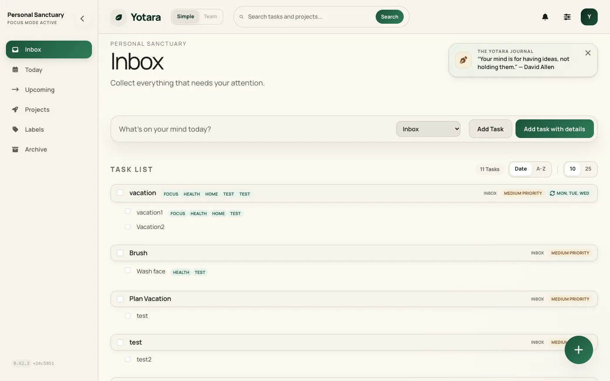

A lightweight, self-hosted
task manager that
puts your privacy first.
Capture, organize, and focus. Your data stays on your server, under your control.

A quieter alternative
Yotara is self-hosted, free, and open source. Your data stays on your server, and setup takes one Docker command. No subscriptions, no configuration marathons, no building your system from scratch.
| Todoist | Vikunja | Notion | Yotara | |
|---|---|---|---|---|
| Self-hosted | — | ✓ | — | ✓ |
| Free forever | — | ✓ | ✓ | ✓ |
| No setup burden | ✓ | — | ✓ | ✓ |
| Your data stays yours | — | ✓ | — | ✓ |
| Open source | — | ✓ | — | ✓ |
What you get
Quick capture, projects, recurring tasks, markdown, themes, and self-hosted privacy. Everything you need, nothing you don't.
Quick Capture
Hit the capture bar, type your task, and move on. Set dates with the date picker and flag priorities with simple markers.
Projects & Labels
Group related tasks, set dates, tag with labels. Stay organized across work, personal, and everything in between.
Subtasks & Recurring
Break big tasks into steps. Set recurring schedules once and let them run — daily, weekly, or custom.
Rich Markdown
Write with markdown formatting and preview live. Built-in toolbar for bold, lists, and links — no syntax to memorize.
7 Handcrafted Themes
From Light Forest to Deep Trench. Every theme is handmade, not auto-generated. Light and dark modes included.
Self-Hosted
Your data stays on your server. No telemetry, no tracking, no vendor lock-in. Open source under MIT — verify every line yourself.
Three steps to clarity
Capture
Hit the capture bar, type your task, and move on. Add dates and priorities as you go — or just dump it in the inbox for later.
Organize
Add to a project, set a date, tag with labels. Your inbox stays clean — triage when you’re ready, not when the task arrives.
Focus
Let Today and Upcoming views guide your attention to what matters.
Built in public. Self-hosted. Yours.
Yotara is open source under the MIT license. Deploy your own instance in one command. No tracking, no telemetry, no data collection.